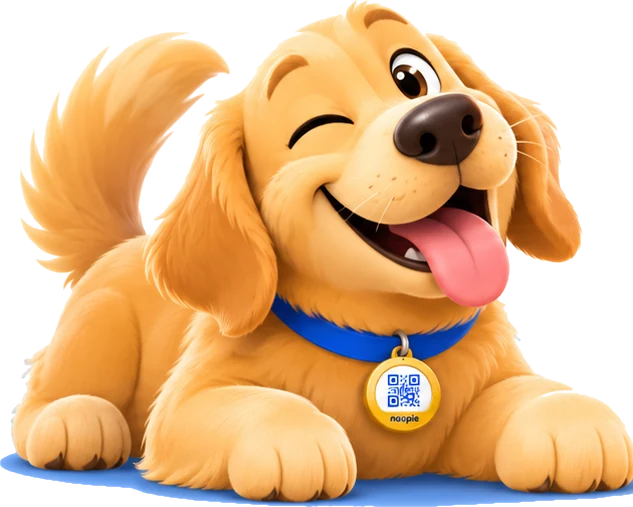
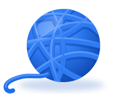
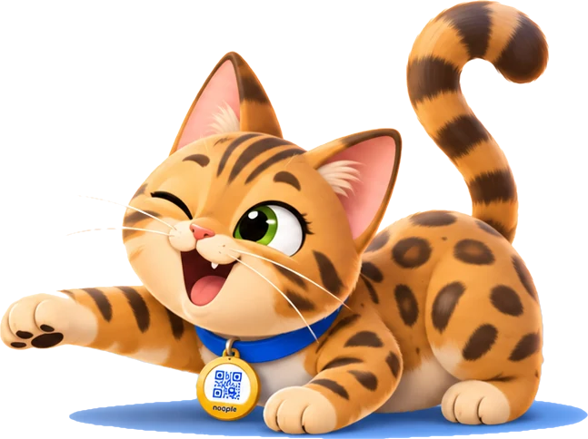
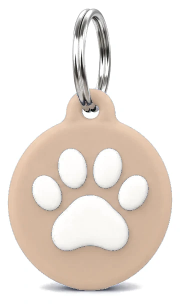
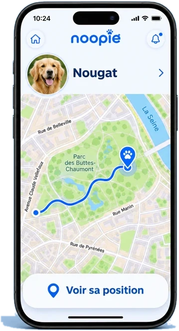
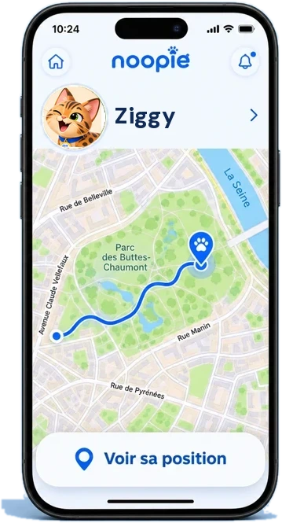

Position en direct
Voyez où il se trouve, à tout moment, sur une carte claire et précise.
En direct
Il explore. Vous gardez le lien.
Il a ses aventures, vous avez la carte.
Et si un jour il prend un mauvais chemin, un scan suffit pour vous réunir.
Suivi sur carte présenté en démonstration — disponibilité et couverture à confirmer.



Il explore.
Vous gardez le lien.
Il a ses aventures, vous avez la carte. Et si un jour il prend un mauvais chemin, un scan suffit pour vous réunir.
Suivi sur carte présenté en démonstration — disponibilité et couverture à confirmer.
Suivi GPS en direct, fiche accessible par QR code et alerte de sécurité : tout tient dans un seul médaillon.


Fixez le médaillon à son collier grâce à son anneau.

Scannez le QR code avec l’application, puis créez sa fiche : photo, nom et votre numéro.


Sa position s’affiche en direct sur la carte de l’application. Vous voyez où il se promène.
Pas besoin d’application : un simple appareil photo suffit.
Le passant vise le dos du médaillon avec l’appareil photo de son téléphone.
Photo, caractère, nourriture, jeux préférés, santé et le numéro du propriétaire, en un instant.
Un geste suffit : le passant vous appelle directement depuis la fiche pour organiser les retrouvailles.
Si le médaillon est détaché de son collier, une alerte de sécurité s’affiche aussitôt sur votre téléphone, avec la dernière position connue de votre animal.
Le traceur GPS au cœur, le QR code au dos : tout ce qu’il faut pour le suivre et le retrouver, dans un médaillon léger et doux pour son cou.


Visuels du modèle en développement. Dimensions et poids à confirmer.
Position en direct, trajets, alertes, mode perdu et fiche partageable : l’application Noopie est le centre de contrôle de votre animal.
Voyez où il se trouve, à tout moment, sur une carte claire et précise.
Médaillon détaché, fiche scannée : vous le savez immédiatement.
Retrouvez le trajet de la journée, la distance et le temps de sortie.
Sa fiche affiche « Je suis perdu » et votre numéro à qui le retrouve.
Un simple scan, sans application, pour vous joindre.
Chiens, chats : chaque animal a sa fiche et son médaillon.
+Oui. Le médaillon Noopie réunit deux fonctions : un traceur GPS intégré, qui affiche la position de votre animal en direct sur la carte de l’application, et un QR code au dos, qui permet à la personne qui le retrouve d’ouvrir sa fiche et de vous appeler, sans installer d’application.
Non. L’appareil photo de la plupart des téléphones récents lit les QR codes directement. La fiche s’ouvre dans le navigateur, sans compte ni installation.
Uniquement celles que vous choisissez dans votre espace : nom, photo, moyen de contact, consignes utiles. Votre adresse et la position de votre domicile ne sont jamais affichées.
Oui. Chaque animal a sa fiche et son médaillon, gérés depuis le même espace.
Le projet est en préparation. Le prix, les matériaux et la date de lancement seront annoncés une fois validés. En rejoignant la liste d’attente, vous serez prévenu en premier.